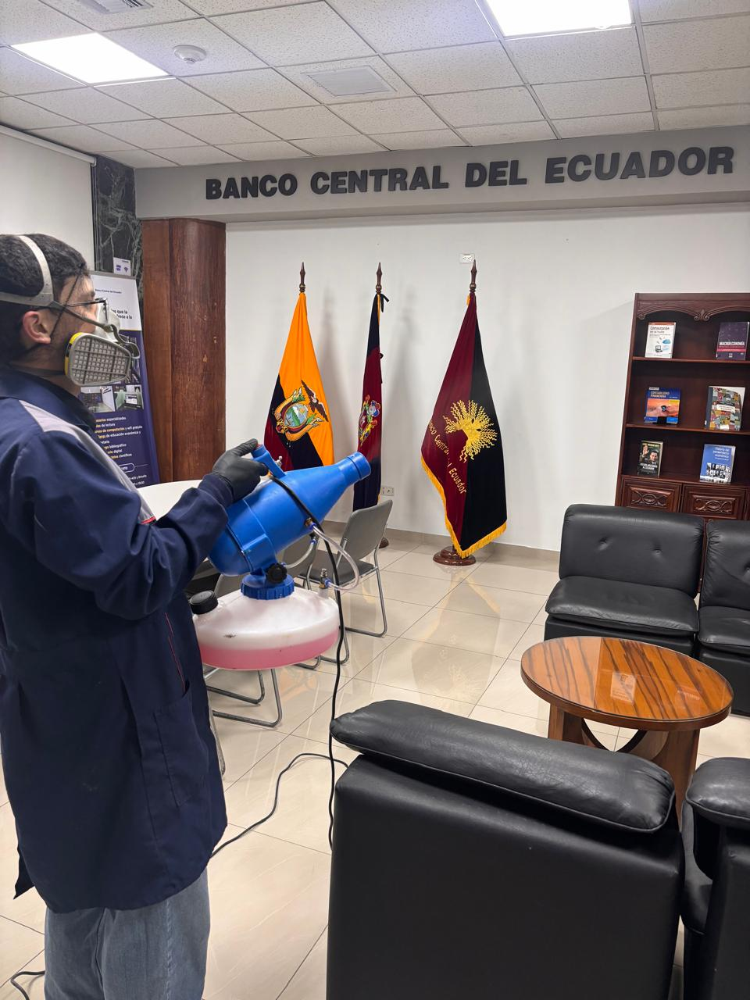

No solo eliminamos plagas, te damos el control. Accede a nuestra plataforma exclusiva para ver reportes detallados y resultados al instante.
Acceder al Portal RupipestMONITOREO EN TIEMPO REAL CON RUPIPEST
El control de plagas evolucionó.
Protege tu espacio en tiempo real.
OlvÃdate de las dudas. Con XpertPlagas, elimina cualquier amenaza sanitaria y monitorea el estado de tu hogar o negocio directamente desde tu celular.
Agenda tu Inspección Gratuita





Transparencia Total:
La única empresa con monitoreo 24/7.


MINISTERIO DEL AMBIENTE
ARCSA
ISO 9001
AGROCALIDAD
Soluciones Integrales para Residencias, Comercios e Industrias
Desde fumigación avanzada y desratización, hasta limpieza profunda y control de aves. Implementamos estrategias a largo plazo, seguras para tu familia y el medio ambiente.

Fumigación Profesional
Control de una amplia variedad de plagas voladoras y rastreras utilizando productos seguros y técnicas avanzadas para asegurar ambientes libres de insectos.
Desratización y Control
Implementación de estrategias integrales para la eliminación de roedores, previniendo daños a la propiedad y riesgos para la salud con un enfoque a largo plazo.
Desinfección de Ambientes
Servicios de desinfección profunda para eliminar bacterias, virus y otros microorganismos, creando entornos más higiénicos y seguros.
Control de Aves
Soluciones éticas y efectivas para el control de poblaciones de aves, previniendo daños estructurales y riesgos sanitarios en edificios.
Nuestro Programa de Manejo Integral de Plagas
Efectividad y Prevención
No solo eliminamos la plaga actual; implementamos estrategias a medida para prevenir futuros vectores desde la raÃz, asegurando la salubridad de su espacio.
Monitoreo en Tiempo Real
A través de nuestro exclusivo Sistema Rupipest, obtenga reportes instantáneos, trazabilidad por códigos QR y control total de su negocio desde su celular.
Atención y GarantÃa Total
Ofrecemos un servicio rápido, discreto y personalizado. Profesionales altamente capacitados trabajando con productos seguros para garantizar resultados definitivos.
Calidad técnica respaldada por expertos
Con seis años de experiencia y una sólida trayectoria, el Ingeniero Chiluisa Rueda Ian Joel lidera XpertPlagas. Aportando su conocimiento especializado, cumplimos rigurosamente con normativas de ARCSA, el Ministerio del Ambiente y el Ministerio del Trabajo para ofrecer soluciones eficientes que garantizan la salud de nuestros clientes y el cuidado del medio ambiente.

Ing. Joel Chiluisa
CEO XpertPlagas

Encuéntranos
Matriz: Quito
Cobertura nacional: Quito, Guayaquil y Cuenca
Preguntas Frecuentes
Todo lo que necesitas saber antes de contratar un servicio de control de plagas.
¿Tienes otra pregunta? EscrÃbenos por WhatsApp